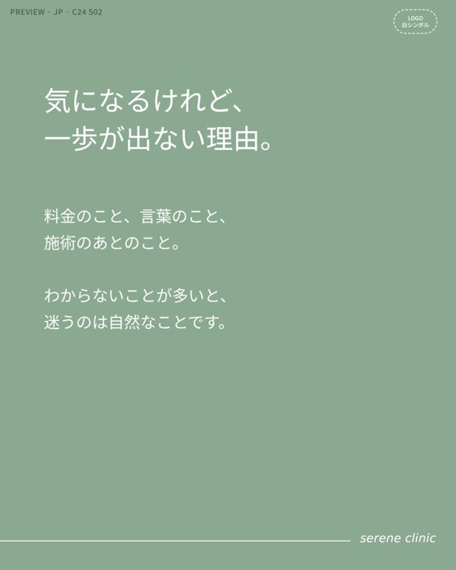
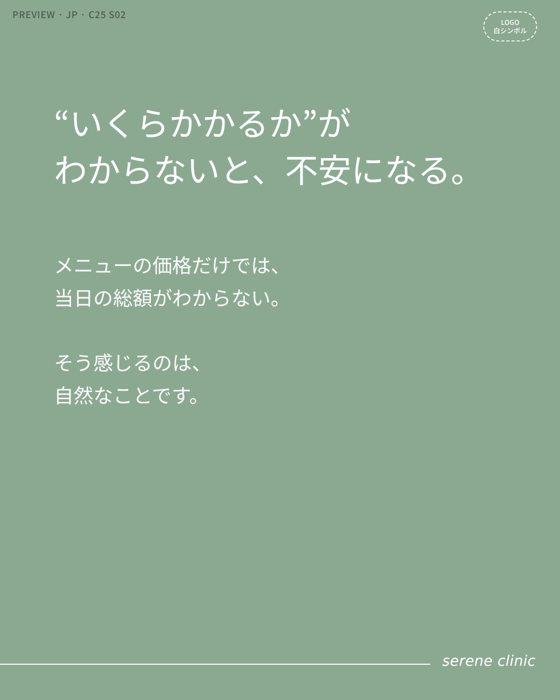
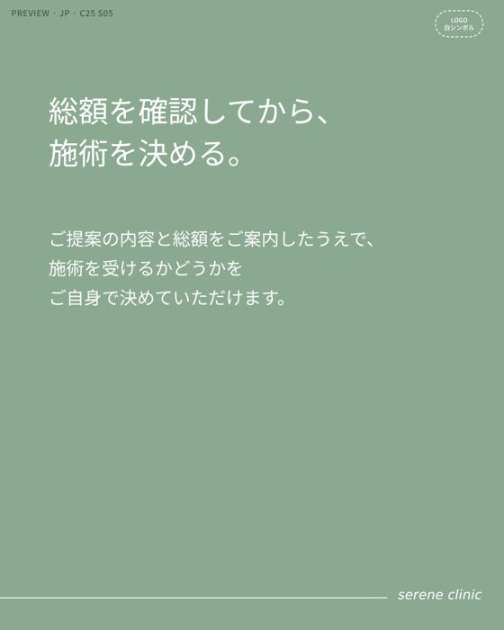
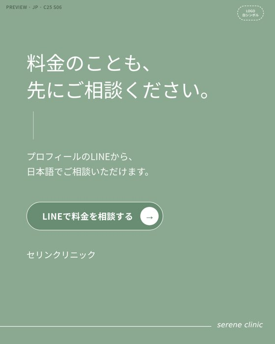
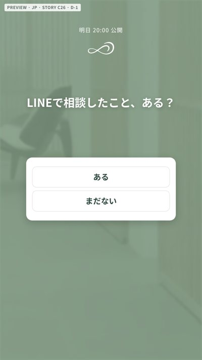
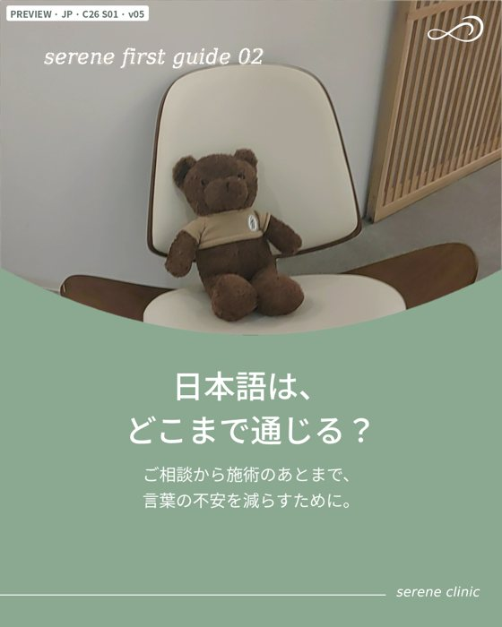
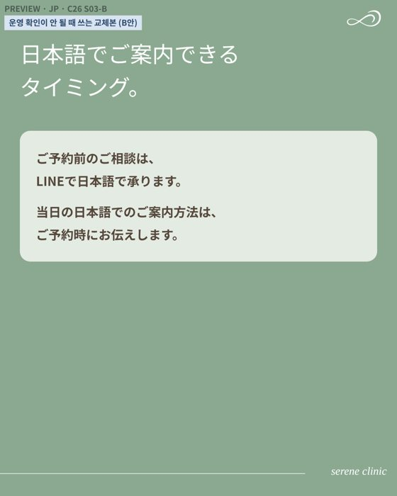

X 게시 본문 (게시 담당용)
韓国の皮膚科、気になるけれど一歩が出ない。 その理由は「わからない」が多いからかもしれません。 料金、言葉、日程、当日の流れ、選び方、帰国後。 11月は、この6つに順番にお答えします。
한국 피부과, 궁금하지만 한 걸음이 안 나간다. 그 이유는 ‘모르는 것’이 많아서일지도 모릅니다. 비용, 언어, 일정, 당일 순서, 고르는 법, 귀국 후. 11월에는 이 6가지에 차례로 답해 드립니다.
병원·디자이너·운영팀이 함께 보는 11월 발행 문서입니다. 날짜별 콘텐츠, 목업과 이미지 문구, 병원 확인 요청, 발행 진행 상황을 이 한 페이지에서 봅니다.
11/11부터 11/30까지 일본 고객 대상으로 인스타그램 피드 8편, 릴스 6편, 스토리 19건, X 12개, note 3편을 게시합니다. 11월 주제는 「처음 가기 전의 6가지 "모르겠다"」입니다. 요금·언어·일정·내원 당일·클리닉 고르는 법·귀국 후 연락을 하나씩 풀어 LINE 상담으로 이어지게 합니다. 목표는 예약·시술 최소 20건(문의 67건 × 전환율 30%)입니다.
12월 첫 주 예정: C23 피드(12/1), N03 note·RL08 릴스(12/2), RL07 릴스(12/5)
이 표는 11월 계획의 모든 게시물이 지금 어떤 상태인지 보여 줍니다. 상태는 운영팀이 게시 후 갱신하며, 이 페이지에서는 보기만 할 수 있습니다.
| 채널 | 계획 | 발행 완료 | 지연 | 진행률 |
|---|
| 계획일 | 콘텐츠 | 채널 | 상태 | 실제 게시일 | 비고 |
|---|---|---|---|---|---|
| 11/11 (수) | C24 韓国の皮膚科、行く前の"わからない"。 | 피드 | |||
| 11/11 (수) | C24 X C24 동반 X 게시물 | X | |||
| 11/11 (수) | C24 D0 C24 당일 공유 스토리 (D0) | 스토리 | |||
| 11/12 (목) | C25 D-1 C25 예고 스토리 (D-1) | 스토리 | |||
| 11/12 (목) | 皮膚の日 皮膚の日(피부의 날) 스토리 (선택) | 스토리 | |||
| 11/13 (금) | C25 料金は、どこまで含まれている？ | 피드 | |||
| 11/13 (금) | C25 X C25 동반 X 게시물 | X | |||
| 11/13 (금) | C25 D0 C25 당일 공유 스토리 (D0) | 스토리 | |||
| 11/13 (금) | 첫방문 안내 11월 첫방문 안내 스토리 | 스토리 | |||
| 11/14 (토) | RL03 はじめての韓国の皮膚科、来院の記録 | 릴스 | |||
| 11/14 (토) | X04 X04 X 단독 게시물 | X | |||
| 11/14 (토) | C26 D-1 C26 예고 스토리 (D-1) | 스토리 | |||
| 11/15 (일) | C26 日本語は、どこまで通じる？ | 피드 | |||
| 11/15 (일) | C26 X C26 동반 X 게시물 | X | |||
| 11/15 (일) | C26 D0 C26 당일 공유 스토리 (D0) | 스토리 | |||
| 11/16 (월) | X05 X05 X 단독 게시물 | X | |||
| 11/16 (월) | C22 D-1 C22 예고 스토리 (D-1) | 스토리 | |||
| 11/17 (화) | C22 施術の前に、旅の予定を。 | 피드 | |||
| 11/17 (화) | C22 X C22 동반 X 게시물 | X | |||
| 11/17 (화) | C22 D0 C22 당일 공유 스토리 (D0) | 스토리 | |||
| 11/18 (수) | RL01 韓国語ができなくても、相談できる？ | 릴스 | |||
| 11/18 (수) | N02 施術の前に、旅の予定を。韓国で美容医療を考えるときの日程のこと | note | |||
| 11/18 (수) | 3連休 안내 3連休 내원 안내 스토리 | 스토리 | |||
| 11/18 (수) | C27 D-1 C27 예고 스토리 (D-1) | 스토리 | |||
| 11/19 (목) | C27 来院当日、施術の前にすること。 | 피드 | |||
| 11/19 (목) | C27 X C27 동반 X 게시물 | X | |||
| 11/19 (목) | C27 D0 C27 당일 공유 스토리 (D0) | 스토리 | |||
| 11/20 (금) | RL06 ダウンタイム、どのくらい？ | 릴스 | |||
| 11/20 (금) | N04 症例写真は、変化だけで判断しない。見るときに確認したい4つのこと | note | |||
| 11/21 (토) | RL04 来院当日、何をするの？ | 릴스 | |||
| 11/21 (토) | X06 X06 X 단독 게시물 | X | |||
| 11/23 (월) | X03 X03 X 단독 게시물 | X | |||
| 11/23 (월) | C28 D-1 C28 예고 스토리 (D-1) | 스토리 | |||
| 11/24 (화) | C28 クリニックを選ぶとき、何を見る？ | 피드 | |||
| 11/24 (화) | C28 X C28 동반 X 게시물 | X | |||
| 11/24 (화) | C28 D0 C28 당일 공유 스토리 (D0) | 스토리 | |||
| 11/25 (수) | RL05 副院長のご紹介 | 릴스 | |||
| 11/25 (수) | C29 D-1 C29 예고 스토리 (D-1) | 스토리 | |||
| 11/26 (목) | C29 帰国してから、気になったら。 | 피드 | |||
| 11/26 (목) | C29 X C29 동반 X 게시물 | X | |||
| 11/26 (목) | C29 D0 C29 당일 공유 스토리 (D0) | 스토리 | |||
| 11/26 (목) | 年末年始 年末年始(연말연시) 진료일 스토리 | 스토리 | |||
| 11/27 (금) | N05 はじめての韓国の皮膚科ガイド。料金・言葉・日程・当日の流れ・選び方・帰国後のこと | note | |||
| 11/28 (토) | RL02 結局、いくらかかる？ | 릴스 | |||
| 11/29 (일) | C30 D-1 C30 예고 스토리 (D-1) | 스토리 | |||
| 11/30 (월) | C30 はじめての方から、よくいただく質問。 | 피드 | |||
| 11/30 (월) | C30 X C30 동반 X 게시물 | X | |||
| 11/30 (월) | C30 D0 C30 당일 공유 스토리 (D0) | 스토리 |
상태 뜻: 발행 완료 게시 확인됨 · 지연 계획일이 지났지만 아직 게시되지 않음 · 오늘 게시 · 예정
칸의 콘텐츠를 누르면 상세 카드로 이동합니다. ✓는 발행 완료입니다.
카드마다 규격·마감·기획 의도·디자인 메모가 있습니다. 「목업과 문구 보기」를 열면 목업 이미지 옆에 이미지에 들어가는 일본어 문구와 한국어 뜻이 나옵니다. 「문구 복사」는 일본어 문구만 복사합니다. 제목·본문 등 문구 위치 앱 스티커 디자인에 넣지 않고 게시할 때 앱에서 붙임 要確認·B안 병원 확인 후 확정
기획 의도 11월 시리즈의 첫 편입니다. 일본 고객이 망설이는 6가지 「모르겠다」를 목차처럼 보여 주고 저장을 유도합니다.




기획 의도 피드 C24와 같은 날 X에 올립니다. 배너는 피드 표지를 가로형으로 바꾼 것입니다.

韓国の皮膚科、気になるけれど一歩が出ない。 その理由は「わからない」が多いからかもしれません。 料金、言葉、日程、当日の流れ、選び方、帰国後。 11月は、この6つに順番にお答えします。
한국 피부과, 궁금하지만 한 걸음이 안 나간다. 그 이유는 ‘모르는 것’이 많아서일지도 모릅니다. 비용, 언어, 일정, 당일 순서, 고르는 법, 귀국 후. 11월에는 이 6가지에 차례로 답해 드립니다.
기획 의도 피드 게시 당일에 게시물을 스토리로 공유하고 질문 스티커로 고객 질문을 모읍니다.

기획 의도 내일 게시할 C25를 예고하고 투표·퀴즈로 반응을 모읍니다.

기획 의도 일본의 「피부의 날」에 맞춰 고객의 피부 고민을 질문 스티커로 모읍니다.
기획 의도 총액은 시술 전에 안내한다는 요금 구조를 보여 줍니다. 금액 숫자는 넣지 않습니다.






기획 의도 피드 C25와 같은 날 X에 올립니다. 배너는 피드 표지를 가로형으로 바꾼 것입니다.

韓国の皮膚科、結局いくらかかる？ SERENEでは ・メニュー価格はウォン・税込 ・診察料は施術料金とは別 ・総額は施術の前にご案内 総額を確認してから、決めてください。 ▶ https://sereneseoul.com/?utm_source=x&utm_medium=organic&utm_campaign=jp_c22-30&utm_content=c25
한국 피부과, 결국 얼마 들까? 세린은 · 메뉴 가격은 원화·부가세 포함 · 진찰료는 시술 비용과 별도 · 총액은 시술 전에 안내 총액을 확인한 뒤에 정하세요. ▶ https://sereneseoul.com/?utm_source=x&utm_medium=organic&utm_campaign=jp_c22-30&utm_content=c25
기획 의도 피드 게시 당일에 게시물을 스토리로 공유하고 질문 스티커로 고객 질문을 모읍니다.

기획 의도 11월 첫방문 조건이 있으면 안내합니다. 조건이 없으면 생략합니다.
기획 의도 일본인 고객 SHORI의 실제 내원 기록입니다. 원음을 살리고 일본어 자막만 정리합니다.

기획 의도 10월까지의 피드 내용을 질문 하나로 다시 알리는 X 단독 게시물입니다.
母娘での韓国旅行を計画される方もいらっしゃいます。 同じ鏡を見ていても、気になるところや、なりたい印象は違うことがあります。 ご一緒にいらしても、ご相談はおひとりずつ伺います。 #母娘旅行 #韓国美容
모녀가 함께 한국 여행을 계획하시는 분도 계십니다. 같은 거울을 봐도, 신경 쓰이는 곳이나 원하는 인상은 다를 수 있습니다. 함께 오셔도 상담은 한 분씩 따로 여쭙니다.
기획 의도 내일 게시할 C26를 예고하고 투표·퀴즈로 반응을 모읍니다.

기획 의도 상담부터 시술 후까지 일본어로 안내되는 시점을 보여 줘 언어 불안을 줄입니다.




기획 의도 피드 C26와 같은 날 X에 올립니다. 배너는 피드 표지를 가로형으로 바꾼 것입니다.

日本語は、どこまで通じる？ 伝えるときは、短くて大丈夫です。 ・気になる部位 ・いつから気になっているか ・これまでに受けた施術 まずはLINEで、日本語のままどうぞ。 ▶ https://sereneseoul.com/?utm_source=x&utm_medium=organic&utm_campaign=jp_c22-30&utm_content=c26
일본어는 어디까지 통할까? 전할 때는 짧아도 괜찮습니다. · 신경 쓰이는 부위 · 언제부터 신경 쓰였는지 · 지금까지 받은 시술 먼저 라인으로, 일본어 그대로 보내 주세요. ▶ https://sereneseoul.com/?utm_source=x&utm_medium=organic&utm_campaign=jp_c22-30&utm_content=c26
기획 의도 피드 게시 당일에 게시물을 스토리로 공유하고 질문 스티커로 고객 질문을 모읍니다.
기획 의도 10월까지의 피드 내용을 질문 하나로 다시 알리는 X 단독 게시물입니다.

症例写真を見るとき、変化だけで判断していませんか。 あわせて確認したいのは、施術内容・費用・主なリスク・経過の4つです。 撮影の時期や条件で、写真の見え方は変わります。結果には個人差があります。 #症例写真 #韓国美容医療
증례 사진을 볼 때, 변화만 보고 판단하고 있지 않나요? 함께 확인할 것은 시술 내용·비용·주요 위험·경과 4가지입니다. 촬영 시기와 조건에 따라 사진은 달라 보입니다. 결과에는 개인차가 있습니다.
기획 의도 내일 게시할 C22를 예고하고 투표·퀴즈로 반응을 모읍니다.
기획 의도 여행 일정을 먼저 알려 주면 그에 맞춰 제안한다는 점을 보여 줘 상담 문턱을 낮춥니다.


기획 의도 피드 C22와 같은 날 X에 올립니다. 배너는 피드 표지를 가로형으로 바꾼 것입니다.

韓国で美容医療を考えるなら、施術の前に旅の予定を。 施術後の過ごし方には個人差があり、帰国後の予定によって考え方が変わることもあります。 滞在日程と帰国後の予定を、ご相談のときに教えてください。 ▶ https://sereneseoul.com/?utm_source=x&utm_medium=organic&utm_campaign=jp_c22-30&utm_content=c22
한국에서 미용의료를 생각한다면, 시술 전에 여행 일정을. 시술 후 지내는 방식에는 개인차가 있고, 귀국 후 일정에 따라 고려할 점이 달라질 수 있습니다. 체류 일정과 귀국 후 일정을 상담할 때 알려 주세요. ▶ https://sereneseoul.com/?utm_source=x&utm_medium=organic&utm_campaign=jp_c22-30&utm_content=c22
기획 의도 피드 게시 당일에 게시물을 스토리로 공유하고 질문 스티커로 고객 질문을 모읍니다.

기획 의도 「한국어를 못해도 상담할 수 있을까?」에 답합니다. C26 언어 편을 다시 불러옵니다.


기획 의도 C22 일정 편과 짝. 검색으로 들어오는 독자에게 일정 이야기를 길게 설명합니다.

기획 의도 11/21~23 연휴에 오는 고객에게 진료일과 당일 흐름 안내를 알립니다.
기획 의도 내일 게시할 C27를 예고하고 투표·퀴즈로 반응을 모읍니다.
기획 의도 내원 당일의 5단계 흐름과 준비물을 보여 줍니다. 3連休(11/21~23) 직전에 게시합니다.


기획 의도 피드 C27와 같은 날 X에 올립니다. 배너는 피드 표지를 가로형으로 바꾼 것입니다.

来院当日、施術の前にすること。 受付・問診票 → カウンセリング・診察 → 内容・費用・リスクのご説明 → ご同意のうえで施術 説明を聞いて、納得してから決めて大丈夫です。
방문 당일, 시술 전에 하는 일. 접수·문진표 → 상담·진찰 → 내용·비용·위험 설명 → 동의 후 시술 설명을 듣고 납득한 뒤에 정해도 괜찮습니다.
기획 의도 피드 게시 당일에 게시물을 스토리로 공유하고 질문 스티커로 고객 질문을 모읍니다.

기획 의도 다운타임 질문에 「체류 일수를 알려 주면 일정에 맞춰 제안한다」로 답합니다. C22 일정 편을 다시 불러옵니다.


기획 의도 증례 사진을 볼 때 확인할 4가지를 설명합니다 (선택 발행).
기획 의도 내원 당일 흐름을 보여 줍니다. C27 당일 편을 다시 불러오며 3連休 첫날에 게시합니다.


기획 의도 10월까지의 피드 내용을 질문 하나로 다시 알리는 X 단독 게시물입니다.

何を受けるか、まだ決めていなくても大丈夫です。 ご予約の前でも、ご質問だけでもご相談いただけます。 気になることを、LINEでひとことお送りください。日本語で承ります。 ▶ LINE：https://sereneseoul.com/?utm_source=x&utm_medium=organic&utm_campaign=jp_c13-21&utm_content=x06 #韓国皮膚科 #韓国美容
무엇을 받을지 아직 정하지 않았어도 괜찮습니다. 예약 전이라도, 질문만이라도 상담하실 수 있습니다. 궁금한 것을 라인으로 한마디 보내 주세요. 일본어로 응대합니다. ▶ LINE: https://sereneseoul.com/?utm_source=x&utm_medium=organic&utm_campaign=jp_c13-21&utm_content=x06
기획 의도 10월까지의 피드 내용을 질문 하나로 다시 알리는 X 단독 게시물입니다.

SERENEのカウンセリングで、最初に伺うのは施術名ではありません。 今のお悩み、お肌の状態、これまでに受けた施術、大切にしたい印象。 それを伺ってから、ご提案を考えます。 #韓国皮膚科 #カウンセリング
세린의 상담에서 처음 여쭙는 것은 시술명이 아닙니다. 지금의 고민, 피부 상태, 지금까지 받은 시술, 소중히 하고 싶은 인상. 그것을 여쭌 뒤에 제안을 생각합니다.
기획 의도 내일 게시할 C28를 예고하고 투표·퀴즈로 반응을 모읍니다.
기획 의도 어디서든 쓸 수 있는 클리닉 선택 기준 4가지를 보여 줍니다. 다른 병원과 비교하거나 비방하지 않습니다.

기획 의도 피드 C28와 같은 날 X에 올립니다. 배너는 피드 표지를 가로형으로 바꾼 것입니다.
美容クリニックを選ぶとき、何を見る？ ・料金と総額の案内が明確か ・施術前に医師の診察があるか ・リスクや経過の説明があるか ・日本語で質問できるか 口コミや価格の前に、確かめておきたいことです。
미용 클리닉을 고를 때 무엇을 볼까? · 비용과 총액 안내가 명확한가 · 시술 전에 의사 진찰이 있는가 · 위험과 경과 설명이 있는가 · 일본어로 질문할 수 있는가 후기나 가격보다 먼저 확인해 두면 좋은 것입니다.
기획 의도 피드 게시 당일에 게시물을 스토리로 공유하고 질문 스티커로 고객 질문을 모읍니다.

기획 의도 부원장 소개 영상을 그대로 쓰되 자막만 고칩니다. C28 고르는 법 편을 다시 불러옵니다.

기획 의도 내일 게시할 C29를 예고하고 투표·퀴즈로 반응을 모읍니다.

기획 의도 귀국 후 연락 방법을 시술 전에 확인하도록 안내합니다.


기획 의도 피드 C29와 같은 날 X에 올립니다. 배너는 피드 표지를 가로형으로 바꾼 것입니다.
施術は、帰国したら終わりではありません。 施術の前に確認しておきたいこと ・施術後に起こりうる変化 ・帰国後の過ごし方 ・気になったときの連絡方法 経過には個人差があります。
시술은 귀국하면 끝이 아닙니다. 시술 전에 확인해 두면 좋은 것 · 시술 후 생길 수 있는 변화 · 귀국 후 지내는 법 · 신경 쓰일 때 연락 방법 경과에는 개인차가 있습니다.
기획 의도 피드 게시 당일에 게시물을 스토리로 공유하고 질문 스티커로 고객 질문을 모읍니다.
기획 의도 연말연시 방한 예약이 시작되는 시점에 진료일을 알립니다.
기획 의도 11월 시리즈 6편을 한 글로 묶은 허브 글입니다.
기획 의도 「결국 얼마나 들까?」에 답합니다. 연말 예약 전 가격 안내 역할을 합니다.


기획 의도 내일 게시할 C30를 예고하고 투표·퀴즈로 반응을 모읍니다.

기획 의도 11월 시리즈의 마지막 편입니다. 스토리로 모은 실제 질문에 답합니다.

기획 의도 피드 C30와 같은 날 X에 올립니다. 배너는 피드 표지를 가로형으로 바꾼 것입니다.
「施術を決めていなくても、相談できますか？」 はい。ご予約の前でも、ご質問だけでも大丈夫です。 はじめての方からよくいただく質問を、Instagramにまとめました。
“시술을 정하지 않았어도 상담할 수 있나요?” 네. 예약 전이라도, 질문만 하셔도 괜찮습니다. 처음 오시는 분께 자주 듣는 질문을 인스타그램에 정리했습니다.
기획 의도 피드 게시 당일에 게시물을 스토리로 공유하고 질문 스티커로 고객 질문을 모읍니다.
게시 문구를 확정하려면 아래 10가지 확인이 필요합니다. 기한 안에 확인되지 않으면 일정은 그대로 두고 「확인이 늦을 때」의 방법으로 게시합니다. 답변은 담당자에게 LINE이나 메일로 주시면 됩니다.
| 기한 | 확인 항목 | 관련 콘텐츠 | 확인이 늦을 때 | 상태 |
|---|---|---|---|---|
| 11/12 (목) | 11월 요금 기준과 진찰료 별도 여부 (금액 숫자는 게시하지 않음) | C25 (11/13), RL02 | C25 게시를 다음 칸으로 미룸 | |
| 11/12 (목) | 원내 사진의 SNS 사용 범위, 리셉션 사진에 가격표가 보이는지 | 피드 표지 전체, C25 | 해당 사진을 다른 원내 사진으로 교체 | |
| 11/12 (목) | 영상 출연·SNS 활용 동의 (SHORI 체험 영상, 원장 인터뷰, 부원장 소개) | RL03 (11/14), RL02 (11/28), RL05 (11/25) | RL03은 스킨부스터 영상(RL07)으로 교체, 원장 화면은 원내 영상으로 교체 | |
| 11/12 (목) | 11월 첫방문 조건이 있는지 | 첫방문 안내 스토리 (11/13) | 스토리 생략 | |
| 11/13 (금) | 3連休(11/21~23) 진료일, 연말연시 진료일 | 3連休 안내 (11/18), 연말연시 안내 (11/26) | 「자세한 일정은 LINE으로 안내」 문구로 대체 | |
| 11/13 (금) | 내원 당일 일본어 응대 방식 (통역 동행·일본어 가능 직원 등) | C26 (11/15), RL01 | B안: 「LINE은 일본어, 당일 안내는 예약 시 안내」 | |
| 11/13 (금) | 내원 당일 실제 순서 (접수 → 상담 → 시술 등) | C27 (11/19), RL04 | 확인된 범위까지만 순서를 표기 | |
| 11/13 (금) | 접수 시 여권 제시가 필요한지 | C27 S04 | B안: 「パスポート」 대신 「身分証明書」 | |
| 11/13 (금) | 귀국 후 LINE으로 상태를 문의할 때 응대 방식 | C29 (11/26) | B안: 「연락 방법은 시술 전에 안내」 | |
| 11/20 (금) | 부원장 영상의 자막 위치(왼쪽 잘림)와 클리닉명 표기 (「セリンクリニック」 또는 SERENE) | RL05 (11/25) | 자막만 다시 얹어 게시 |
한 줄 결론: 11월 목표는 예약·시술 최소 20건입니다. 일본어 LINE 문의 67건에 문의→예약 전환율 30%를 곱한 값입니다. 콘텐츠는 문의를 늘리는 일을, 병원 CS는 문의를 예약으로 바꾸는 일을 맡습니다. 둘 중 하나만으로는 20건에 닿지 않습니다.
결론: 11월 콘텐츠는 일본 고객이 “상담해 보고 싶다”에서 “실제로 방문할 수 있겠다”로 넘어가게 만드는 데 집중합니다.
이 표는 이번 발행의 목적 3가지와 그 목적을 이루는 수단을 정리한 것입니다.
| 목적 | 왜 필요한가 | 11월 수단 |
|---|---|---|
| ① 방문 확신 → LINE 상담 | 상담에 관심이 있어도 요금·언어·일정·당일 흐름을 몰라 멈추는 고객이 있음 | 6가지 「모르겠다」를 한 편에 하나씩 풀어 줌 (C22, C24~C30) |
| ② 새 영상 소재 확보 | 같은 영상이 오래 반복되면 반응이 떨어짐 | 병원 기존 영상을 다시 편집한 릴스 6편 |
| ③ 어떤 콘텐츠가 상담을 만들었는지 기록 | 문의가 어디서 왔는지 모르면 다음 달 콘텐츠를 고를 수 없음 | X·note·인스타그램 링크에 출처 표시, 문의 접수 때 유입경로 기록 |
결론: 예약 20건은 문의를 늘리는 일과 전환율을 올리는 일을 함께 해야 닿는 숫자입니다.
이 표는 11월 말에 이번 발행이 성공했는지 판단하는 기준입니다.
| 목표 | 11월 목표 | 계산·측정 방법 |
|---|---|---|
| 예약·시술 | 최소 20건 | 문의 67건 × 전환율 30% |
| 일본어 LINE 문의 | 67건 이상 | 병원 CS 기록 |
| 문의 → 예약 전환율 | 30% 이상 | 예약 ÷ 문의 |
| 유입경로 기록률 | 70% 이상 | 문의마다 「어디서 보고 오셨는지」 기록한 비율 |
결론: 콘텐츠가 직접 책임지는 숫자는 「콘텐츠를 보고 들어온 LINE 문의 9건」입니다. 나머지는 그 9건을 만들기 위한 중간 지표입니다.
이 표는 콘텐츠가 제 역할을 하는지 주마다 확인하는 기준입니다.
| 목표 | 11월 목표 | 확인 시점 |
|---|---|---|
| 콘텐츠 링크를 거친 LINE 문의 | 9건 이상 (11/11 재시작 기준) | 매주 |
| 피드 저장률 | 첫 세 편(C24·C25·C26) 평균을 기준선으로, 이후 편이 그 이상 | 11/17 기준선 확정 |
| 릴스 끝까지 보기 비율 | 편당 50% 이상 (3초 이상 본 사람 중) | 게시 후 7일 |
| 고객 질문 모으기 | 11/25까지 12건 이상 (C30 「자주 듣는 질문」 재료) | 11/25 |
| 주간 예약 진행 | 11/15까지 누적 9건 | 11/15 중간 점검 |
결론: 전환율 30%는 병원 응대에서 만들어집니다. 아래 네 가지를 11월 한 달 동안 함께 지켜 주시면 됩니다.
| 표기 | 뜻 | 예시 |
|---|---|---|
| C | 인스타그램 피드 게시물 번호 | C24 = 11월 첫 피드 |
| RL | 인스타그램 릴스 번호 | RL06 = 다운타임 릴스 |
| X / N | X(구 트위터) 게시물 / note(일본 블로그) 글 | X04, N02 |
| 동반 | 피드와 같은 날 내는 X 게시물 | C22 X |
| S01~ | 캐러셀의 장 번호 | C29 S04 |
| D-1 / D0 | 피드 전날 예고 스토리 / 당일 공유 스토리 | C22 D-1 |
| 방식 A / B | A: 기존 영상에 일본어 자막만 / B: 한국어 음성을 끄고 일본어 내레이션과 자막 | RL01은 B |
| B안 | 병원 확인이 늦을 때 바꿔 넣는 대체 카드 | C26 S03-B |
| 게시일 | 콘텐츠 | 종류 | 최종 파일 마감 | 상태 |
|---|---|---|---|---|
| 11/11 (수) | C24 | 피드 | 11/10 (화) 18:00 | |
| 11/11 (수) | C24 X | X | 11/10 (화) 18:00 | |
| 11/11 (수) | C24 D0 | 스토리 | 11/10 (화) 18:00 | |
| 11/12 (목) | C25 D-1 | 스토리 | 11/11 (수) 18:00 | |
| 11/12 (목) | 皮膚の日 | 스토리 | 11/11 (수) 18:00 | |
| 11/13 (금) | C25 | 피드 | 11/12 (목) 18:00 | |
| 11/13 (금) | C25 X | X | 11/12 (목) 18:00 | |
| 11/13 (금) | C25 D0 | 스토리 | 11/12 (목) 18:00 | |
| 11/13 (금) | 첫방문 안내 | 스토리 | 11/12 (목) 18:00 | |
| 11/14 (토) | RL03 | 릴스 | 11/12 (목) | |
| 11/14 (토) | C26 D-1 | 스토리 | 11/13 (금) 18:00 | |
| 11/15 (일) | C26 | 피드 | 11/14 (토) 18:00 | |
| 11/15 (일) | C26 X | X | 11/14 (토) 18:00 | |
| 11/15 (일) | C26 D0 | 스토리 | 11/14 (토) 18:00 | |
| 11/16 (월) | C22 D-1 | 스토리 | 11/15 (일) 18:00 | |
| 11/17 (화) | C22 | 피드 | 11/16 (월) 18:00 | |
| 11/17 (화) | C22 X | X | 11/16 (월) 18:00 | |
| 11/17 (화) | C22 D0 | 스토리 | 11/16 (월) 18:00 | |
| 11/18 (수) | RL01 | 릴스 | 11/16 (월) | |
| 11/18 (수) | N02 | note | 11/17 (화) 18:00 | |
| 11/18 (수) | 3連休 안내 | 스토리 | 11/17 (화) 18:00 | |
| 11/18 (수) | C27 D-1 | 스토리 | 11/17 (화) 18:00 | |
| 11/19 (목) | C27 | 피드 | 11/18 (수) 18:00 | |
| 11/19 (목) | C27 X | X | 11/18 (수) 18:00 | |
| 11/19 (목) | C27 D0 | 스토리 | 11/18 (수) 18:00 | |
| 11/20 (금) | RL06 | 릴스 | 11/18 (수) | |
| 11/20 (금) | N04 | note | 11/19 (목) 18:00 | |
| 11/21 (토) | RL04 | 릴스 | 11/19 (목) | |
| 11/23 (월) | C28 D-1 | 스토리 | 11/22 (일) 18:00 | |
| 11/24 (화) | C28 | 피드 | 11/23 (월) 18:00 | |
| 11/24 (화) | C28 X | X | 11/23 (월) 18:00 | |
| 11/24 (화) | C28 D0 | 스토리 | 11/23 (월) 18:00 | |
| 11/25 (수) | RL05 | 릴스 | 11/23 (월) | |
| 11/25 (수) | C29 D-1 | 스토리 | 11/24 (화) 18:00 | |
| 11/26 (목) | C29 | 피드 | 11/25 (수) 18:00 | |
| 11/26 (목) | C29 X | X | 11/25 (수) 18:00 | |
| 11/26 (목) | C29 D0 | 스토리 | 11/25 (수) 18:00 | |
| 11/26 (목) | 年末年始 | 스토리 | 11/25 (수) 18:00 | |
| 11/27 (금) | N05 | note | 11/26 (목) 18:00 | |
| 11/28 (토) | RL02 | 릴스 | 11/26 (목) | |
| 11/29 (일) | C30 D-1 | 스토리 | 11/28 (토) 18:00 | |
| 11/30 (월) | C30 | 피드 | 11/29 (일) 18:00 | |
| 11/30 (월) | C30 X | X | 11/29 (일) 18:00 | |
| 11/30 (월) | C30 D0 | 스토리 | 11/29 (일) 18:00 |
status.json을 엽니다 (GitHub → serene-plan → status.json → 연필 아이콘)."C24", "C24 X", "C22 D-1")의 "done": false를 true로 바꾸고, "date"에 게시일, "url"에 게시물 주소(선택)를 적습니다.confirmed의 R01~R10을 같은 방법으로 표시합니다.메디힘 · 세린 일본 3채널 11월 발행 · 마스터 일정 v1.3 기준 · 내용 갱신 2026-11-11 ·